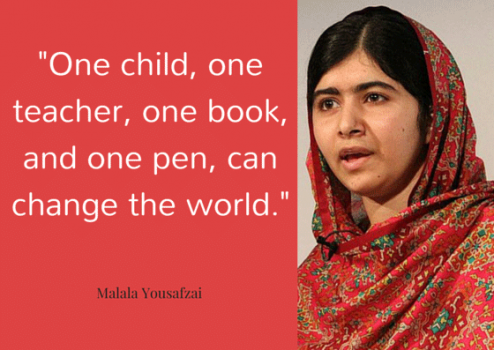

Son preference further creates problems for a girl child. The deep-set social norm that sons will take care of the parents in their old age, while girls will have to get married and leave the parents house leads to a lot of preferential treatment to the sons and subsequently, discrimination against the girl child from a very young age. This then leads to parents not giving any importance to the education of the girl child.
Lack of basic facilities such as funtional toilets and hand washing areas force children to stay out of school. Girls are especially affected due to lack of functional toilets. They may be either be absent from school on a regular basis, or drop out of school altogether.
In rural areas, children have to walk, often alone, through forests, rivers, or deserted areas, and cover a long distance to school. Due to increased risk of violence against girls, parents prefer their daughters stay safe at home. Devyani was pulled out of school because she had to walk alone to school.